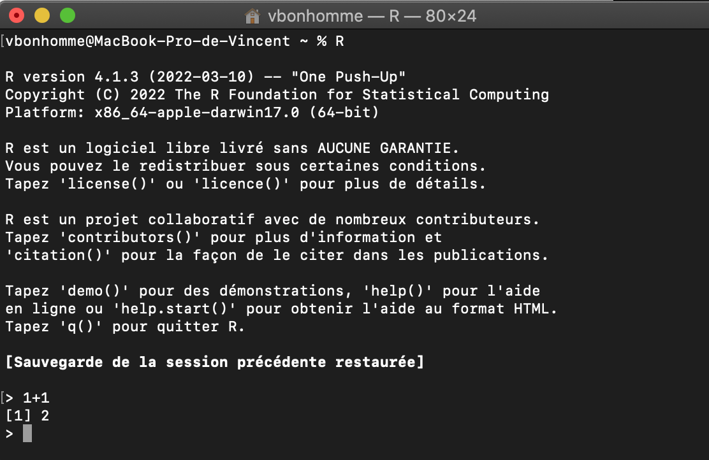

1+1[1] 2Nous allons plonger progressivement dans la découverte de R en combinant des éléments du langage et les bonnes pratiques à adopter dès le départ.
Quand vous ouvrez R (ou RStudio), vous êtes nez à nez avec un “invite de commande” et un curseur :
> 
R attend que vous tapiez des commandes avec vos jolis doigts et que vous pressiez <Entrée> pour exécuter la commande. Le résultat s’affiche alors :
1+1[1] 2Une commande combinée peut se dérouler sur plusieurs lignes comme on le verra plus tard (typiquement lors de la définition d’une fonction ou d’un pipe de fonctions) mais quand vous pressez <Entrée> l’ensemble de ces commandes doit être syntaxiquement correct, sinon une erreur vous sera retournée.
Vous pouvez également taper plusieurs commandes indépendantes sur la même ligne, séparées par ; mais je vous le déconseille.
Vous pouvez naviguer dans votre historique de commandes avec les touches <Haut> et <Bas> de votre clavier. Vous pouvez aussi effacer votre console (sans effacer l’historique) avec <Ctrl>+L ou <Cmd>+L sous Mac.
Si vous êtes dans RStudio, vous aurez remarqué plusieurs fenêtres dont l’une est la Console de R (en bas à gauche sur la capture d’écran) que nous venons de voir, ainsi qu’une autre, généralement au dessus, dans laquelle vous pouvez ouvrir des Scripts au format .R, c’est à dire en fichier texte.
Vous aurez remarqué que dans le panneau “Console”, le même texte de “bienvenue” apparaît et c’est normal : après tout, RStudio n’est ni plus ni moins qu’une console avec des outils autour.
Vous pouvez parfaitement tout faire dans le panneau “Console” et ne pas utiliser le reste si vous chérissez l’ambiance des années 1990s. Mais à ce compte là, utilisez plutôt RGui, c’est à dire ce que nous avons vu précédemment. RGui tout seul n’a plus vraiment de sens dans la vie quotidienne actuelle de l’analyse de données.
Vous pouvez aller faire un tour dans les Préférences de RStudio et en paramétrer l’aspect, notamment pour avoir un fond sombre et ne pas abimer vos jolis yeux.
 Pour le moment, nous n’allons utiliser que la console de RStudio, nous découvrirons le reste un tout petit peu plus tard.
Pour le moment, nous n’allons utiliser que la console de RStudio, nous découvrirons le reste un tout petit peu plus tard.
En premier lieu, R est une calculette. Vous pouvez copier-coller les blocs de code directement dans votre console R :
# back to school
1+2
3-4
2/3
2*2
# beyond +, -, /, *
2^4
sqrt(9) # equivalent to 9^(1/2)
7%%3
# precedence rules apply
(1.5-2)*4
1.5-2*4[1] 3
[1] -1
[1] 0.6666667
[1] 4
[1] 16
[1] 3
[1] 1
[1] -2
[1] -6.5Tous les opérateurs arithmétiques courants sont disponibles :
+, -, *, / pour l’arithmétique de base^ pour élever au carré et sqrt pour la racine carrée%% pour le modulo, etc.Vous venez d’utiliser - peut-être sans le savoir -, votre première fonction : sqrt, pour square root. Les fonctions ont souvent des noms explicites et sont, généralement, suivies de parenthèses dans lesquelles glisser une ou des valeurs.
En réalité, toutes les opérations ci-dessus sont des fonctions, y compris un banal +1. Nous y reviendrons mais cela nous vaut la première maxime de sagesse populaire à garder dans un coin de la tête :
En R, tout est fonction.
Vous pouvez également utiliser des parenthèses pour “emboiter” des opérations dans le bon ordre. Sans parenthèses, les règles de précédence2 classiques s’appliquent comme dans l’exemple ci-dessus : une multiplication sera calculée avant une addition.
Comme on pouvait s’en douter, R a une mémoire et c’est donc plus qu’une calculette : c’est une calculatrice.
Pour stocker une valeur dans une variable nous utilisons l’opérateur d’assignation : <-3
plop <- 3
plop^2[1] 9D’autres opérateurs d’assignation existent (->, =, <<-, etc.) mais je vous conseille - calmement mais fermement - de vous en tenir au bon vieux <-4.
Naturellement, si vous assignez une nouvelle valeur à une variable, celle-ci est remplacée :
plop <- 2
plop+3[1] 5Et bien entendu vous pouvez combiner les variables :
plip <- 7
plop*plip[1] 14Vous pouvez lister les variables existantes avec la fonction ls(). L’onglet “Environnement” dans RStudio permet aussi de les visualiser, plus convivialement et de façon plus détaillée.
Pour afficher la valeur d’une variable, et plus généralement d’un objet, il suffit de taper son nom dans la console et d’appuyer sur <Entrée>. En coulisses, R appelle alors automatiquement la fonction print.
R a tendance à faire beaucoup de choses en coulisses. Dans l’ensemble, cela se traduit par un caractère raisonnablement intuitif pour vous. Sachez simplement qu’une opération aussi naturelle qu’une assignation à la volée comme on vient de le faire est une hérésie pour un esprit informaticien orthodoxe, habitué à déclarer une variable et son type avant d’y assigner une valeur.
Mal nommer les choses c’est ajouter au malheur du monde – Albert Camus
There are only two hard things in Computer Science: cache invalidation and naming things. – Phil Karlton
À propos du nommage de vos variables, soyez explicites mais compacts et évitez : les caractères spéciaux, les majuscules, les points (utilisez _) et les noms réservés comme pi.
Je vous conseille l’anglais, même approximatif, partout et tout le temps (commentaires, noms de variables, etc.).
# good names
mod1
mod1_spain
N_perm
# bad names
my.model # . is for methods
MY_MODEL # calm down
My_Model # Camel Case works but not favoured
my_model_after_lda_a_and_data_subset2_flavourB # headaches and typos garanteed
# invalid or error-prone names
34_data
pi <- 4 # works but very bad idea
print <- 2 # same
&italyPour assigner plus d’une valeur à une variable, la fonction c, pour concatenate, est votre amie :
toto <- c(1, 2, 3, 4, 5)
toto*2[1] 2 4 6 8 10Jusqu’ici toutes les variables assignées étaient des scalaires, c’est à dire des variables ne comprenant qu’une valeur unique.
toto n’est pas un scalaire mais un vecteur de nombres, qui peut s’écrire en ligne, c’est à dire en une seule et unique dimension. Je pose ça là, nous y reviendrons bien vite.
Quelques fonctions bien utiles pour visualiser et décrire des variables en R :
length(toto) [1] 5head(toto, 2) # show the first 2 values[1] 1 2tail(toto, 3) # show the last 3 values[1] 3 4 5Nous voyons que certaines fonctions acceptent plus d’une seule valeur au sein de leurs parenthèses : on parle d’argument. Quand plus d’un seul argument est passé à une fonction, on les sépare par des virgules. Certaines fonctions peuvent/doivent aussi être appelées à vide, comme on l’a vu avec ls().
Vous m’avez vu (me) taper “à la main”, des séries de nombres telles que c(1, 2, 3, 4, 5). On constate une certaine régularité dans cette séquence des premiers entiers naturels.
Jusqu’à 5, on peut imaginer la taper à la main, mais imaginons que nous ayons besoin d’aller jusqu’à 100 ou même à 37427. Doit bien y avoir quelqu’un·e qui a pensé à une fonction pour faire ça non ? Ceci nous amène à une double maxime, peut-être les deux plus importantes de toute cette formation.
Si tu penses que tu es en train de faire quelque chose de répétitif et/ou stupide, il existe à coup sûr une façon plus intelligente de faire
De façon plus compacte :
Un·e bon·ne programmeur·se est une grosse feignasse
R possède toutes les fonctions dont on peut rêver pour générer séquences régulières et nombres aléatoires.
Commençons par les séquences régulières et la versatile fonction seq qui prend au minimum deux arguments, deux options, pour le point de départ et le point d’arrivée :
seq(1, 10) [1] 1 2 3 4 5 6 7 8 9 10Générér une séquence d’entiers naturels est une opération si banale en programmation que l’on peut faire encore pus court avec l’opérateur :
1:5[1] 1 2 3 4 5-1:4[1] -1 0 1 2 3 4De la même façon, vous pouvez répéter une ou des valeurs avec rep :
tonton <- 1:5
rep(tonton, 2) [1] 1 2 3 4 5 1 2 3 4 5rep(tonton, each=3) [1] 1 1 1 2 2 2 3 3 3 4 4 4 5 5 5À ce point de votre existence, vous devriez vous poser les questions suivantes :
R, comme tout langage de programmation, possède sa documentation. Tout est documenté et en premier lieu les fonctions. Nous y arrivons bientôt mais parlons d’abord plus en détail des fonctions.
Le recyclage est un concept très utile mais souvent mal compris et potentiellement glissant. Voyons un exemple parlant :
toto <- 1:5
toto*3[1] 3 6 9 12 15Il n’aura pas échappé à votre sagacité que dans le précédent exemple, ou une multiplication est opérée entre deux objets de tailles différentes (cinq valeurs et une seule), R vous a compris et a multiplié chaque élément de toto par 3.
C’est l’idée, omniprésente, de recyclage. Ça ne parait pas grand chose mais c’est souvent bien pratique et, hélas, quelques fois glissant. Par exemple, si vous multipliez deux vecteurs non-conformes, c’est à dire ni de même longueur, ni multiples l’un de l’autre, des effets indésirables peuvent se manifester. Ou pire encore, rester cachés.
toto <- c(1, 2, 3, 4)
tata <- c(5, 4, 3)
toto*tataWarning in toto * tata: longer object length is not a multiple of shorter
object length[1] 5 8 9 20De nos jours, R a tendance à émettre des Warnings quand un recyclage exotique est impliqué. Lisez les messages et autres warnings ! Celui-ci est plutôt explicite mais si vous n’y comprenez goutte, copiez-collez le message dans un moteur de recherche.
[ : saisir et changer des valeursIndexer une ou des valeurs c’est sélectionner un sous-ensemble de valeurs dans une variable pour en faire quelque chose.
L’opérateur d’indexation est le crochet droit : [, qui tel Dupont et Dupond vont par paires. À gauche du crochet, la variable; à l’intérieur l’indice ou les indices.
tutu <- c(7, 12, 2, 5, 4)
tutu[1][1] 7tutu[3][1] 2tutu[length(tutu)] # take the last value of tutu, no matter tutu' length[1] 4tutu[c(2, 4)][1] 12 5L’indexation peut se combiner avec l’assignation si on ne veut pas seulement saisir les données mais en faire quelque chose :
tutu[1] 7 12 2 5 4tutu[c(2, 3)] <- c(-1, -3)
tutu[1] 7 -1 -3 5 4tutu[c(2, 3)] <- 0.5 # indexing, assignation and recycling combined!
tutu[1] 7.0 0.5 0.5 5.0 4.0Ce type d’indexation est dit “positive” : l’indice réfère aux positions que l’on veut.
Bien pratique, l’opération d’indexation “négative” sélectionne ce que l’on ne veut pas.
tutu[1] 7.0 0.5 0.5 5.0 4.0tutu[-1][1] 0.5 0.5 5.0 4.0tutu[-c(1, 3)] <- pi
tutu[1] 7.000000 3.141593 0.500000 3.141593 3.141593Et comme vous vous en doutiez, on peut également utiliser une variable pour indexer :
toto <- c(6, 5, 4, 3)
tata <- c(2, 3)
toto[tata][1] 5 4toto[-tata][1] 6 3Le concept d’indexation est absolument central en R, et en programmation en général.
L’indexation peut varier à la marge avec des indices dans plusieurs dimensions comme nous le verrons plus loin (iris[2, 3]), voire même des doubles crochets ([[), mais le comportement présenté ici reste invariable. Youpi !
<Ctrl> + <L>. Vos objets sont conservés.<Haut> et <Bas>.<Tab><Tab> de nouveau : la liste des arguments apparaît avec la portion de doc consacrée.Code. Vous y trouverez des fonctions très utiles (“Reindent lines”, “Reformat code” par exemple). À droite de la commande se trouve aussi les raccourcis clavier. Utilisez-les !Bravo : vous venez de mettre le premier orteil dans le monde merveilleux de R !
Vous savez désormais :
Nous allons continuer sur notre lancée combinant découvertes et bonnes pratiques, en parlant de reproductibilité et de scripts, de documentation des fonctions, d’écriture de vos propres fonctions et nous allons enrichir votre vocabulaire.
essayez donc `+`(1, 2)↩︎
voir ?Syntax↩︎
`<-`(toto, 4); toto*2 puisqu’on vous dit que tout est fonction !↩︎
L’assignation -> est acceptable dans certains contextes, notamment en combinaison avec un pipe %>%. = est plutôt réservés aux arguments de fonctions ou, éventuellement, à des méta-paramètres en début de script. <<- est en revanche proscrit car il assigne dans l’environnement global. Utilisé dans une fonction, il remplacera dans l’environnement global la valeur de cette variable, si elle existe. Si vous pensez en avoir besoin, c’est généralement (>99.9%) que votre script/fonction est mal fichue.↩︎
❤ Placé dans le domaine public par Vincent Bonhomme